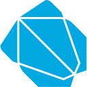
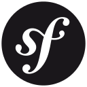
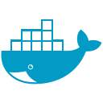
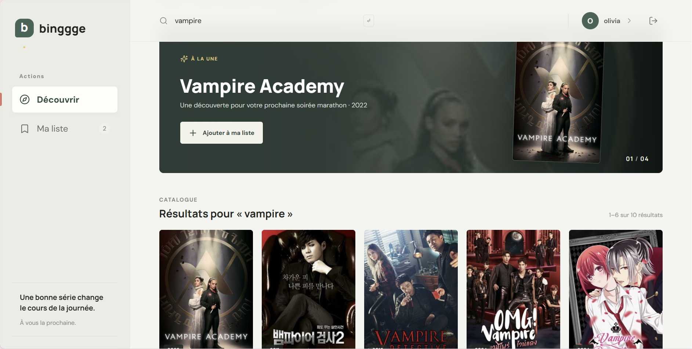
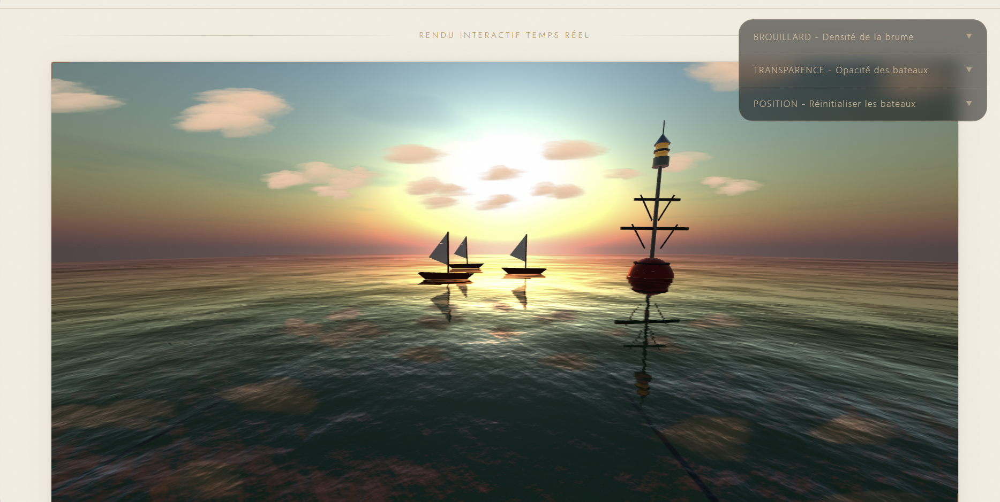

Programmation
Les langages avec lesquels je construis.
- JavaExpert
- PHPExpert
- PythonAvancé
- JavaScriptAvancé
- C / C++Intermédiaire

DartDébutant
Étudiante en informatique · Développeuse
Un espace technique consacré à mes réalisations, aux problèmes que j’explore et aux technologies que je découvre au fil de mon parcours.
class Developer:
curiosity = True
learning = True
def investigate(self, problem):
while not self.understand(problem):
self.test(problem)
self.debug(problem)
return self.build(problem)01 / À propos de moi
Je suis Wendy Patrícia, étudiante en troisième année de BUT Informatique à l’Université de Lorraine, en France.
Mon parcours m’a permis d’acquérir une expérience en développement logiciel, notamment en backend et full-stack, à travers différents projets académiques et pratiques. J’aime relever des défis techniques, explorer de nouvelles technologies et transformer des idées en solutions concrètes.
Je m’intéresse particulièrement au Cloud Computing, à l’architecture des infrastructures et à la cybersécurité. Mon objectif est de continuer à approfondir mes compétences et de contribuer à la conception de systèmes performants, évolutifs et sécurisés..
02 / Technologies
Technologies, outils et concepts que j’ai explorés tout au long de mon parcours.
Les langages avec lesquels je construis.

DartDébutantDes interfaces aux services applicatifs.

SymfonyExpertOrganiser, interroger et relier les données.
Les outils qui font vivre les applications.

DockerExpertProtéger les échanges, les accès et les données.
Créer et explorer des univers interactifs.
Donner forme aux idées.
Comprendre les images par le code.
J’apprends en construisant.
Voir ces compétences en pratique03 / Projets
Découvrez mes réalisations en logiciel, développement web, robotique et systèmes. Parcourez tous les projets, filtrez par domaine et explorez chacun en détail.
Un jeu de flipper 3D avec Unity et C#, dans un univers hivernal inspiré des Vosges, avec deux niveaux et une progression liée au score.

Une plateforme de gestion des opérations pour ANETSYS.

Lecteur Spotify pour Windows, développé avec Electron, React et TypeScript.

Architecture d’application web associant interface, API et base de données.
Projet de vision par ordinateur pour le suivi de la main et le comptage des doigts en temps réel.

Suivi de rangs de culture, détection par caméra et robotique.

Reconstruction et visualisation interactives d’objets avec WebGL.
04 / Domaines d’intérêt
Un aperçu des domaines et des technologies que j’explore à travers mes cours, mes projets et mes expérimentations.
Applications web, API, systèmes backend et interfaces.
Bases de données relationnelles et NoSQL, avec un intérêt pour la structuration et l’interrogation des données.
Des projets autour du Raspberry Pi, des caméras, du traitement d’images, de la navigation et des systèmes physiques.
Explorer le déploiement, la connexion et l’exploitation des applications.
05 / Me contacter
Je m’intéresse aux projets techniques, aux stages, aux collaborations et aux occasions d’apprendre.